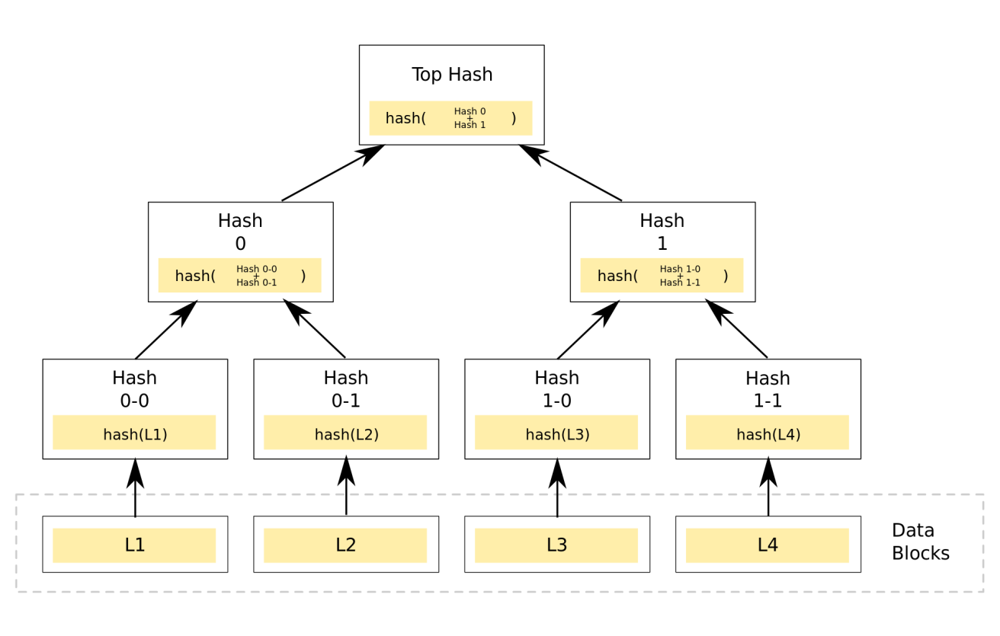
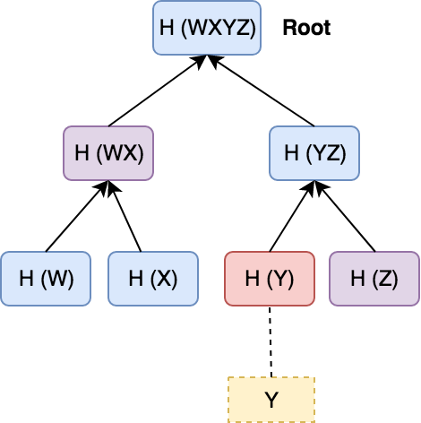

<!doctype html>
<html lang="en">
  <head>
    <meta charset="utf-8">

    <title>Hashing and merkle trees</title>

    <meta name="author" content="Dhruvin Parikh">

    <meta name="apple-mobile-web-app-capable" content="yes" />
    <meta name="apple-mobile-web-app-status-bar-style" content="black-translucent" />

    <meta name="viewport" content="width=device-width, initial-scale=1.0, maximum-scale=1.0, user-scalable=no, minimal-ui">

    <link rel="stylesheet" href="../../reveal.js/css/reveal.css">
    <link rel="stylesheet" href="../../reveal.js/css/theme/black.css" id="theme">

    <!-- Code syntax highlighting -->
    <link rel="stylesheet" href="../../reveal.js/lib/css/zenburn.css">

    <!-- Printing and PDF exports -->
    <script>
      var link = document.createElement( 'link' );
      link.rel = 'stylesheet';
      link.type = 'text/css';
      link.href = window.location.search.match( /print-pdf/gi ) ? '../../reveal.js/css/print/pdf.css' : '../../reveal.js/css/print/paper.css';
      document.getElementsByTagName( 'head' )[0].appendChild( link );
    </script>

    <!--[if lt IE 9]>
    <script src="../reveal.js/lib/js/html5shiv.js"></script>
    <![endif]-->

    <style>
      .reveal .slides h1, .reveal .slides h2, .reveal .slides h3 {
        text-transform: none;
      }

      .two-column {
        display: flex;
        flex-wrap: wrap;
      }

      .two-column em {
        margin: 20px;
      }

      .reveal .big-and-bold {
        font-weight: bold;
        font-size: 135%;
      }

      .reveal .shrunk-a-bit {
        font-size: 90%;
      }

      .reveal .shrunk-a-bit pre {
        width: 100%;
      }

      .reveal pre {
        width: 100%;
      }

      .reveal .highlight {
        color: yellow;
        font-weight: bold;
      }

      .reveal .highlightRed {
        color: red;
        font-weight: bold;
      }
    </style>
  </head>

  <body>
    <div class="reveal">
      <div class="slides">

<!------------------------------------------------------->


<section data-markdown><script type="text/template">

## CSBC 2000 - Essentials of Blockchain Development and Security

### Class 6: Hashing and merkle trees

*Dhruvin Parikh*

</script></section>

<section data-markdown><script type="text/template">

## Recap

* IAM in blockchains
* HLF ecosystem
* Public permissioned, private permissionless

</script></section>

<section data-markdown><script type="text/template">

## Class Plan

* The CIA Triad
* Hashing: merkle trees, bloom filters 
* Applications of hashing in DLT

</script></section>

<section data-markdown><script type="text/template">

## Information Security

* Infosec, is the practice of protecting information by mitigating information risks.
* Typically involves preventing or reducing the probability of unauthorized/inappropriate access to data, or the unlawful use, disclosure, disruption, deletion, corruption, modification, inspection, recording or devaluation of information.

</script></section>

<section data-markdown><script type="text/template">

## The CIA Triad

* Confidentiality, Integrity, Availability
* Recall the Byzantine Generals problem
* Refer to data-in-motion and data-at-rest


</script></section>

<section data-markdown><script type="text/template">

## The CIA Triad: Confidentiality

* Controlling access to data to prevent unauthorized disclosure
* Confidential data must be accessible only to those parties that have been granted access to it
 * Those who are unauthorized are actively prevented from obtaining access

</script></section>

<section data-markdown><script type="text/template">

## The CIA Triad: Confidentiality

* Can be compromised by direct attacks designed to gain unauthorized access in order to steal or tamper with data. E.g. MITM, keyloggers, ransomware
 * Can also be violated unintentionally through human error, carelessness, or inadequate security controls.
* Can be enforced by data classification and labeling; strong access controls and authentication mechanisms; encryption of data in process, in transit, and in storage; steganography; remote wipe capabilities; and adequate education and training for all individuals with access to data

</script></section>

<section data-markdown><script type="text/template">

## Steganography


</script></section>

<section data-markdown><script type="text/template">

## The CIA Triad: Integrity

* Integrity is about ensuring that data has not been tampered with and, therefore, can be trusted
* Receiver sees exactly what the sender sends them; nothing more, nothing less
* E.g. Banking customers need to be able to trust that their banking information and account balances have not been tampered with

</script></section>

<section data-markdown><script type="text/template">

## The CIA Triad: Integrity

* Can be compromised by an attack vector (such as tampering with intrusion detection systems, modifying configuration files, or changing system logs to evade detection) or unintentionally, through human error, lack of care, coding errors, or inadequate policies, procedures, and protection mechanisms
* Can be secured by checksums, digital certificates, Trusted CAs, intrusion detection systems, auditing, version control

</script></section>

<section data-markdown><script type="text/template">

## The CIA Triad: Availability

* Availability means that networks, systems, and applications are up and running
* Recall CAP
* Ensures that authorized users have timely, reliable access to resources when they are needed

</script></section>

<section data-markdown><script type="text/template">

## The CIA Triad: Availability

* Can be compromised by many things, including hardware or software failure, power failure, natural disasters, and human error
* Can be protected by redundancy (recall horizontal vs vertical scaling), hardware fault tolerance (for servers and storage), regular software patching and system upgrades, backups, comprehensive disaster recovery plans


</script></section>

<section data-markdown><script type="text/template">

## DDoS


</script></section>

<section data-markdown><script type="text/template">

## Hashing

* We have some idea of hashing at this point
* A function that takes any data and gives you unique fingerprint
* This fingerprint is often called a digest (because it's compression) • Crucial for integrity verification

</script></section>

<section data-markdown><script type="text/template">

## Checksum

* Can help verify integrity of data with a hash
* A good hash is sensitive to extremely minute changes
* Need to make sure there's no collision


</script></section>

<section data-markdown><script type="text/template">

## Hash Functions

* How do we ensure collisions don't happen?
* We need a Cryptographic Hash Function
* These are extremely resistant to brute-forcing and hence collisions 
 * This is why you should have long, complex passwords!
* CHFs have the property of producing seemingly random output for any input, no matter how "close" they are

</script></section>

<section data-markdown><script type="text/template">

## Hash Functions

* Some popular CHFs: • MD5 (broken)
 * SHA1 (broken)
 * SHA2
 * SHA3 (Keccak)


</script></section>

<section data-markdown><script type="text/template">

## Merkle Trees

* A tree in which every leaf node is labelled with the cryptographic hash of a data block, and every non-leaf node is labelled with the cryptographic hash of the labels of its child nodes
* Hash trees allow efficient and secure verification of the contents of large data structures


</script></section>

<section data-markdown><script type="text/template">

## Merkle Trees



</script></section>

<section data-markdown><script type="text/template">

## Merkle Tree Verification

* Verification happens using a given merkle root from a trusted source (e.g. the block header)
 * Get all the data from the untrusted network 
 * Compute the Merkle root from them
 * If they differ, data lacks integrity
* It's very efficient!



</script></section>

<section data-markdown><script type="text/template">

## Merkle Tree In Blockchains

* Merkle root is stored in block header
* It is calculated from all txs at the time the block is mined


</script></section>

<section data-markdown><script type="text/template">

## Merkle Tree Second Preimage attack

* The Merkle hash root does not indicate the tree depth, enabling a second-preimage attack in which an attacker creates a document other than the original that has the same Merkle hash root
* For example, an attacker can create a new document containing two data blocks, where the first is h(h(0-0)+h(0-1)), and the second is
hash h(h(1-0)+h(1-1))


</script></section>

<section data-markdown><script type="text/template">

## Merkle Tree Second Preimage attack

* Bitcoin is still vulnerable to this attack!
* Although it would take significant work to produce a block where the transactions produce hashes which can then be deserialized as valid transactions


</script></section>

<section data-markdown><script type="text/template">

## Bloom Filter

* A Bloom filter is a space-efficient probabilistic data structure, conceived by Burton Howard Bloom in 1970, that is used to test whether an element is a member of a set
* False positives are possible, but false negatives are not – in other words, a query returns either "possibly in set" or "definitely not in set"
* Elements can be added to the set, but not removed; the more items added, the larger the probability of false positives

</script></section>

<section data-markdown><script type="text/template">

## Bloom Filter

* Have a bunch of hash functions, a number of buckets
* When data is inputted, each hash function makes a mark on one of the buckets (uniformly distributed 
* The buckets after the operation become the signature of the data


</script></section>

<section data-markdown><script type="text/template">

## Bloom Filter

* Can pass this bucket around and get the verification that data belongs in the filter
* False positive happens when h1 for data1 is set and h2 for data2 is not set but they happen to be the same spot
* In this case, data2 is given a false positive

</script></section>

<section data-markdown><script type="text/template">

## Bloom Filter: SPV

* Simplified Payment Verification (SPV) is a method employed by some thin clients within the bitcoin network in order to verify transactions without the requirement to keep an entire copy of the blockchain. As such these thin nodes use bloom filters to specify only the transactions they are interested in receiving updates for

</script></section>

<section data-markdown><script type="text/template">

## References

* 

</script></section>

<section data-markdown><script type="text/template">

## End of Class

</script></section>


<!------------------------------------------------------->


      </div>

    </div>

    <script src="../../reveal.js/lib/js/head.min.js"></script>
    <script src="../../reveal.js/js/reveal.js"></script>
    <script src="../../reveal.js/plugin/zoom-js/zoom.js"></script>

    <script>

      // Full list of configuration options available at:
      // https://github.com/hakimel/reveal.js#configuration
      Reveal.initialize({
        controls: true,
        progress: true,
        history: true,
        center: true,

        transition: 'none', // none/fade/slide/convex/concave/zoom

	math: {
          mathjax: '../lib/MathJax/MathJax.js',
          config: 'TeX-AMS_SVG-full',
	},

        // Optional reveal.js plugins
        dependencies: [
          { src: '../../reveal.js/plugin/markdown/marked.js', condition: function() { return !!document.querySelector( '[data-markdown]' ); } },
          { src: '../../reveal.js/plugin/markdown/markdown.js', condition: function() { return !!document.querySelector( '[data-markdown]' ); } },
          { src: '../../reveal.js/plugin/highlight/highlight.js', async: true, callback: function() { hljs.initHighlightingOnLoad(); } },
          { src: '../../reveal.js/plugin/math/math.js', async: true }
        ]
      });

    </script>

  </body>
</html>